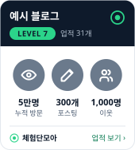

내 블로그 히스토리
첫 글부터 지금까지 블로그가 어떻게 자랐는지 한 페이지로 정리해요. 달성한 업적은 블로그 사이드바 위젯과 공유 이미지로 자랑할 수 있어요.
- 업적 배지와 블로그 레벨포스팅·방문자·이웃·연속 포스팅 등 10가지 업적
- 블로그 연혁과 올해 결산첫 글, n번째 글, 가장 활발했던 달
- 다녀간 장소와 친구와 VS 대결글 속 지도로 세는 발도장, 13가지 대결
- 업적 위젯과 공유 이미지 NEW블로그 사이드바에 걸고, 인스타그램에 올리기

체험단·애드포스트 준비 도구
블로그 주소 하나로 바로 확인해요
체험단 사이트 18곳
누르면 각 사이트가 새 창으로 열려요
사이트 정보는 바뀔 수 있어요. 캠페인 조건과 규정은 꼭 각 사이트에서 직접 확인해 주세요. 체험단모아는 각 사이트와 제휴 관계가 없어요.
블로그 체험단 꿀팁
처음 신청부터 후기 발행까지 16편
처음 하는 블로그 체험단, 이렇게 시작해요
체험단은 업체가 제품이나 식사를 제공하고, 블로거는 직접 경험한 내용을 후기로 남기는 방식이에요. 처음엔 선정이 잘 안 되는 게 당연하니, 아래 순서대로 차근차근 쌓아 가면 돼요.
1. 블로그 기본기 먼저
- 한 가지 주제(예: 우리 동네 맛집)로 글을 꾸준히 쌓으면 업체가 블로그 성격을 파악하기 쉬워요.
- 직접 찍은 사진을 넉넉히 넣고, 솔직한 느낌을 적은 글이 선정에 유리해요.
- 프로필 사진과 블로그 소개를 깔끔하게 정리해 두세요. 업체가 가장 먼저 보는 곳이에요.
2. 여러 사이트에 가입하고 넓게 신청하기
- 사이트마다 캠페인이 달라서, 위 목록의 여러 곳에 가입해 두면 기회가 훨씬 많아져요.
- 신청 문구는 미리 써 두고 캠페인에 맞게 조금씩 고쳐 쓰면 시간을 아낄 수 있어요.
- 내가 갈 수 있는 지역과 체험 가능 요일·시간을 먼저 확인하고 신청하세요.
3. 선정되면 지켜야 할 것
- 예약이 필요한 캠페인은 방문 전에 꼭 예약하고, 체험단으로 방문한다고 밝혀 주세요.
- 키워드, 사진 수, 글자 수, 지도·영상·배너 같은 필수 조건을 빠짐없이 지켜야 수정 요청을 피할 수 있어요.
- 리뷰 기간 안에 올리지 못하면 사이트마다 정한 불이익이 있을 수 있어요. 일정이 어렵다면 방문 전에 미리 연락하는 게 좋아요.
- 제공받은 후기라는 사실은 공정거래위원회 기준에 맞게 표시해야 해요. 대부분 사이트가 배너나 문구를 안내해 줘요.
4. 선정률을 높이는 작은 팁
- 후기 마감을 잘 지키고 꼼꼼하게 쓴 기록이 쌓이면 다음 선정에 도움이 돼요.
- 신청 문구에는 "어떻게 써 줄지"를 구체적으로 적어 주세요. 예) 메뉴별 사진, 찾아가는 길, 장단점 정리.
- 한꺼번에 많이 붙으면 감당이 어려우니, 일주일에 갈 수 있는 곳 수를 미리 정해 두세요.
자주 묻는 질문
블로그 방문자가 적어도 신청할 수 있나요?
네, 대부분 사이트는 방문자 수와 상관없이 신청할 수 있어요. 다만 인기 캠페인은 방문자 수나 이전 후기 품질을 보고 고르는 경우가 많아서, 처음에는 경쟁이 적은 캠페인부터 넓게 신청하는 게 좋아요.
체험단은 돈이 드나요?
가입과 신청은 보통 무료예요. 다만 제공 범위를 넘는 추가 주문이나 이동 비용은 본인 부담인 경우가 많으니 캠페인 안내를 꼭 읽어 보세요.
후기는 어떻게 쓰는 게 좋나요?
직접 경험한 내용을 사진과 함께 구체적으로 쓰는 게 가장 좋아요. 맛·분위기·서비스처럼 좋았던 점을 자세히 소개하고, 가격이나 주차처럼 방문 전에 알면 좋은 정보도 함께 적어 주면 독자에게 도움이 돼요. 업체가 준 미션(키워드, 사진 수 등)을 지키는 것도 잊지 마세요. 사실과 다르게 부풀리는 표현은 피하는 게 좋아요.
선정되고 나서 못 가게 되면 어떻게 하나요?
알게 된 즉시 사이트 안내에 따라 취소하거나 문의하세요. 연락 없이 방문하지 않거나 후기를 올리지 않으면 이후 신청이 제한될 수 있어요.